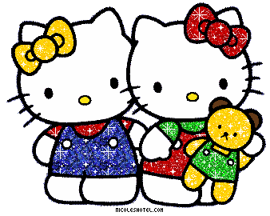

ถ่ายคนอ้วนยังไงให้ สวย หล่อ
สวัสดีครับๆ ผมมีข้อสงสัยเรื่องการถ่ายภาพ คือการถ่ายผู้หญิงอ้วนยังไงให้ออกมาดูน่าสนใจหรือดูสวยดูหน้าดึงดูด จริงๆ ผมเห็นคนถ่ายนางแบบนายแบบ เยอะมากและคิดว่า ถ้าเราหันมาถ่าย ตัวแบบที่ไม่สวย ในบางสถาการ์ณที่ไปถ่ายรับปริณญา มันคงจะหัวปั่นแน่นอนถ้าเราเอาเทคนิคถ่ายรูปกับคนหุ่นสวยไปถ่ายกับคนที่หุ่นไม่สวย มันคงจะไม่เข้าถ้า ผมเลยคิดว่า ถ้าเราเอาความสวยจากตัวแบบไม่ได้ ก็เอาความสวยจากวิว หรือมุมกล้อง หรืออะไรก็แล้วแต่ที่ทำให้ภาพนั้นมันเกิดความน่าดึงดูดหรือความสวยงาม ที่จะทำให้คนดูและตัวแบบรุ้สึกว่าตัวเองสวยภาพนี้สวยทั้งๆที่เป็นคนที่หุ่นไม่สวย ผมเลยขอคำปรึกษาจากรุ่นพี่จากวงการถ่ายภาพหน่อยครับว่ารุ่นพี่ เจอเหตุการ์ณเช่นนี้ หรือ เคยเจอเหตุการ์ณนี้ ช่วยแชร์ภาพหรือแชร์ประสบการ์ณ หน่อยนคะ
รับ เป็นประคุณอย่าสงสูงครับ
สามารถสอบถามได้ที่
Ploy ARisa
แสดงความคิดเห็น
จขกทก
มีทั้ง ครับ คะ
?
บางคนหามุม จะถ่ายภาพโอ่ง ให้ผอมเพรียวเป็นเหยือก เป็นแจกัน?
โอ่งก็คือโอ่ง
หมีมันตัวปุ้มปุ้ย มันก็สวยของมัน
ยีราฟคอยาว มันก็สวยของมัน
ที่ควรเน้น คือ แสง
ถ้าคิดว่า ____อยากเห็นโอ่งเพรียวขึ้นบ้าง อยากให้ดูผอมสักหน่อย
แสงมันหลอกตาได้ ไม่ถ่ายแสงตรง หน้าตรงแบนๆ ใช้แสงข้าง
เอี้ยวใบหน้า
ยืนเอียงหันข้าง
แขนไม่แนบลำตัว
ดอกไม้ที่ถือ ลายดอกบนเสื้อผ้า ไม่ใช่ลายดอกใหญ่เบ้อเร่อ
สีเสื้อผ้าใช้สีโทนหนัก เข้ม
ใบหน้าไม่มัน แต่งหน้าบางๆ
แต่ละคนจะมีมุมที่สวยที่สุดอยู่ครับ ต้องหาให้เจอ แล้วสวยที่สุดของคนนึงวก็อาจสวยสู้อีกคนนึงไม่ได้...
นางงามเองหากถ่ายรูปผิดมุมก็สามารถกลายเป็นนังแจ๋วก้นครัวได้เหมือนกันแหละครับ...
คนอ้วนหากดูตรงๆ มันก็เห็นอ้วนฯ, ก็ต้องหาวิธีบังมุมปิดเหลี่ยมอะไรไปตามอาการ... ตามสูตรมันมีวิธี"ซ่อน"ได้ 2 อย่างครับ คือ 1)
เบี่ยงมุมให้เห็นไม่ถนัด หรือ 2) หาของหรือคนยืนข้างๆมาบัง...
เช่นไหล่ใหญ่ก็ต้องเบี่ยงไหล่ สะโพกโตก็ต้องเบี่ยงสะโพก... แต่พุงโตนี่ พุงคนมันกลมเบี่ยงไม่ได้
ก็ต้องยืนถอยหลังนิดนึงให้คนยืนข้างๆเอาตัวบังพุงนิดๆ...
วิธีหาท่าถ่ายรูปคือต้องซ้อมที่หน้ากระจกครับ... ให้เริ่มจาก"ท่าสูตร"คือท่านางงามฯ
ยืนก้าวเท้าข้างไม่ถนัดไปข้างหน้าครึ่งเท้าแล้วเบี่ยงไหล่+บิดเอวนิดนึง แอ่นอกกระดกก้นนิดๆ ให้อกพุ่ง ก้นโด่ง, จะก้าวแค่ไหน บิดแค่ไหน เบี่ยงแค่ไหน
แอ่นแค่ไหน กระดกแค่ไหน ฯลฯ ต้องซ้อมหน้ากระจกครับ...
ดูตัวอย่างรูปนางงามถ่ายนั่นแหละ เริ่มจากตรงนั้นครับแล้วดัดแปลงให้เหมาะ... ซ้อมให้ดี พอตากล้องยกกล้องปุ๊บให้คอยดูว่ากล้องตัวไหนจะลั่นชัตเตอร์
ก็ให้"ปั้นท่า"ใส่กล้องตัวนั้นก่อนเลย...
ถ้าถ่ายเต็มตัว ไม่มีโอกาสเปลี่ยนรูปหน้าจากเลนส์ครับ ขึ้นอยู่กับช่างแต่งหน้าเลยครับ ... เพราะว่า ....
1. ถ้าใช้เลนส์ไวด์ เอาแบบไว้กลาง สัดส่วนขากับหัวจะแปลกๆ ถ้าแบบอยู่ข้างๆก็โดนยืด อ้วนไปใหญ่
2. ถ้าใช้เลนส์เทเล ก็จะได้ใกล้เคียงของจริงเหมือนตาเห็น แก้ไม่ได้
ถ้าจะให้เปลี่ยนรูปหน้าจากเลนส์ ให้ใช้มือถือกล้องหน้าครับ (ไปถ่ายเองเถอะ ว่าง่ายๆ 555+)
ก้มหน้านิดๆ เหลือกตาหน่อยๆ เลนส์มันจะยืดคางให้เองเพราะเลนส์มือถือมันห่วย distortion ไม่ดี ทำให้หน้าดูเรียวขึ้น ...
ผู้หญิงส่วนมากเลยมักจะบอกว่าตัวเองเซลฟี่สวยกว่ามืออาชีพถ่าย แต่หารู้ไม่ว่านั่นคือภาพปลอมไม่เหมือนตาเห็น อย่าภูมิใจไปนักเลย
ส่วนการโพสต์ให้คนอ้วนสวยขึ้นคือ บอกให้แบบ "ก้มหน้าลงนิดนึง" ครับ จิกตามองกล้องนิดๆ มองข้างหน่อยๆ (แต่อย่าทำทุกรูปทุกมุม
มันจะตลกเพราะมีภาพหลายสิบ แต่ทุกรูปแบบทำหน้าเดียว มุมเดียวกันหมด ... ควรจะเปลี่ยนซ้าย ขวา ตรง บ้าง แต่ก้มหน้านิดๆ)
แต่ระวัง!! อย่าก้มมาก มันจะไปกดไขมันใต้คางให้ทะลักออกมา ดูน่าเกลียดมาก ถ้าแบบก้มมากเกินไป ก็บอกว่าเงยหน้าอีกนิดเดียว ปรับไปปรับมาจนจะดีที่สุด
หมายเหตุ: เป็นไปไม่ได้ที่สุดท้าย แบบจะพอใจ เพราะสาวๆทุกคนเคยเซลฟี่ด้วยเลนส์ไวด์กล้องหน้าที่ยืดคางให้เรียวจากมือถือมาแล้ว ไม่ว่าอย่างไร
เธอก็จะไม่พอใจภาพจากเลนส์คุณภาพสูงที่สื่อถึงความเป็นจริงครับ ... ดังนั้น ถ้าสุดท้ายลูกค้าบ่นว่าหน้าไม่สวยทั้งๆที่คุณพยายามเต็มที่แล้ว
ก็ไม่ต้องซีเรียสครับ
ตอบในฐานะคนถ่ายรูปสนุกๆนะ
1.อยู่ที่เบ้าหน้าด้วย ถ้าสวย จะมีมุมสวยที่หลากหลาย (ไม่รู้ว่าเรียกว่าอะไรนะ) ถ้าสวยไม่มาก ก็มีมุมแบบนี้น้อยลง ต้องหาให้เจอ
2.ถ้าเจอแล้ว ต้องหาแสงที่ดี เสนแส่วนที่ (ควรจะ) สวยที่สุดออกมา รวมถึงองึ์ประกอบภาพด้วยนะ
3.จากข้อ 2 ถ้าได้ปัจจัยที่ว่าแล้ว ถ่ายมุมกดๆลงมาหน่อย หรือเอียงๆหน้า ก็จะมืำให้เพรียวขึ้น (บ้าง)
4.จริงๆ เจ้าตัวย่อมรู้แหละว่าเค้ามีลิมิตแบบไหน ถ้าไม่หลอกตัวเองนะ ขอให้ข้อ 1-3 มาดี มันก็ดีเอง
ป.ล. ขี้คร้าน พวกนางจะรัดนเำหนักมาสุดๆล่ะ